Asuka, Nara: things to do, food and stays
Asuka · Nara
Asuka
Highlighted on the Nara map.

Stay
ブランシエラ 石舞台テラス
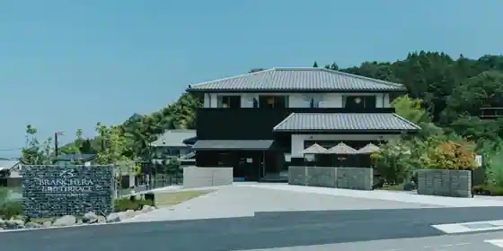
Buranshiera Ishi Butai Terrace
あすか癒俚の里 森羅塾
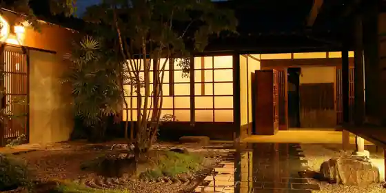
Asuka Yu Ri No Sato Shinra Juku
Inn in Kaminari, Asuka with one group per day.
国の登録有形文化財の宿 ブランシエラ ヴィラ 明日香
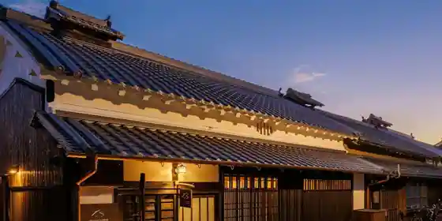
Kuni No Toroku Yukei Bunkazai No Yado Buranshiera Villa Asuka
Inn in Asuka with a renovated traditional house.
カフェ＆ペンション飛鳥
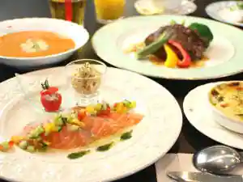
Cafe & Pension Asuka
Pension in Etsu, Asuka; 2-minute walk from Asuka Station.
ブランシエラ ヴィラ 明日香
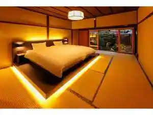
Buranshiera Villa Asuka
民宿 若葉
Minshuku Wakaba
Ｂ＆Ｂ Ａｓｕｋａ
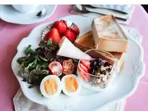
B&B Asuka
飛鳥民宿北村
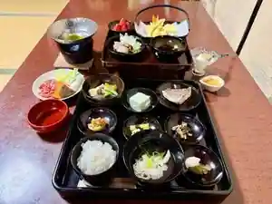
Asuka Minshuku Kitamura
Dining
ダ テッラ
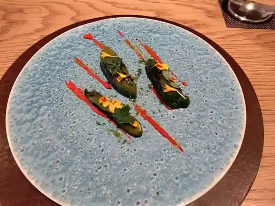
Da Terra
cafe ことだま
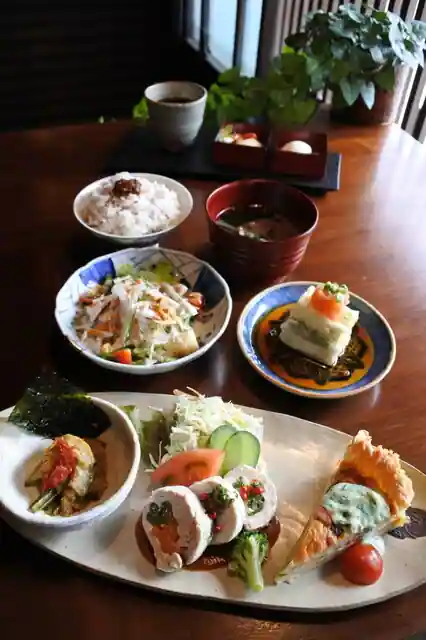
cafe Kotodama
珈琲館 御園
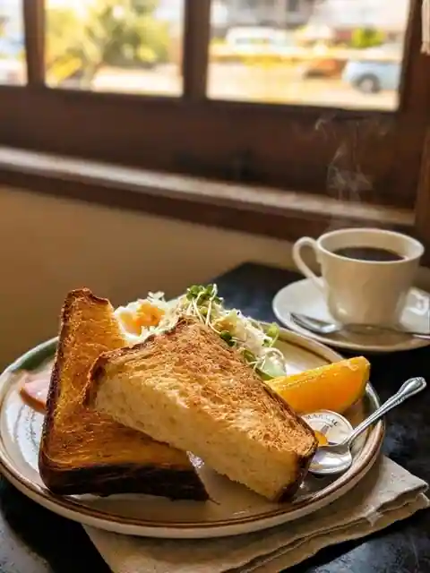
Coffee Kan Misono
あすか夢販売所
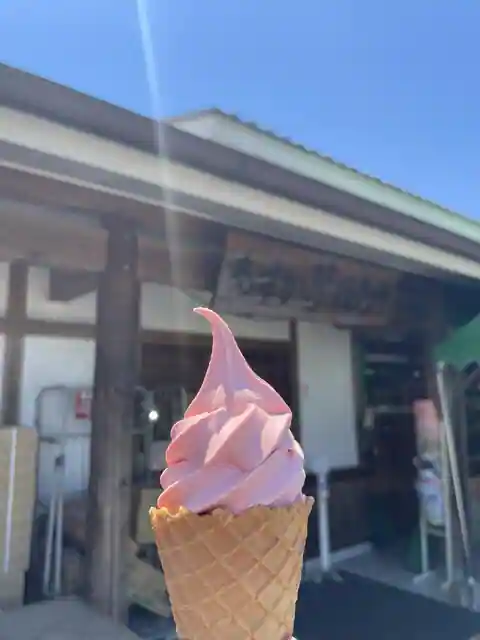
Asuka Yume Hanbaijo
めんどや
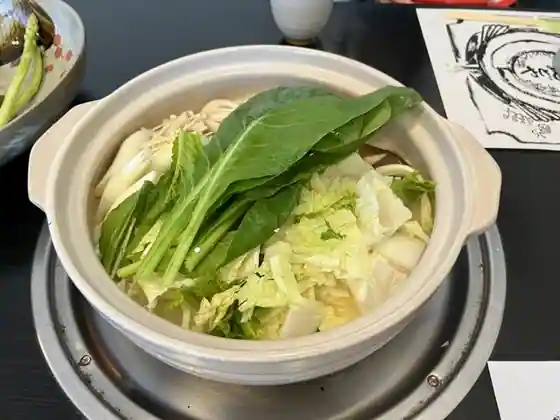
Mendoya
夢市茶屋
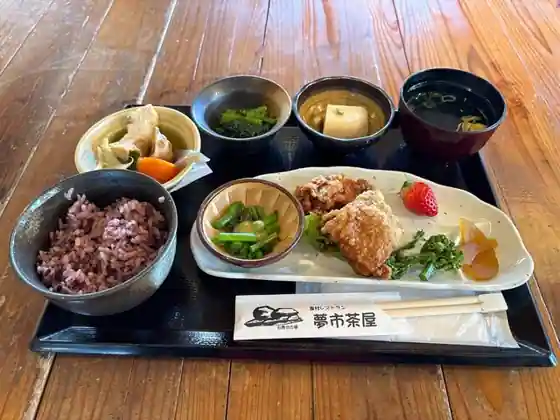
Yume Shi Chaya
山帰来
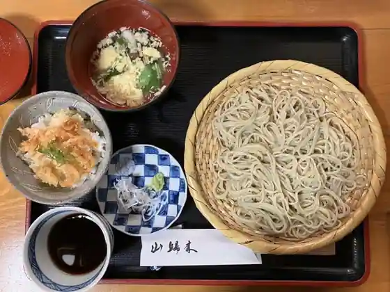
Sankirai
とんかつ喫茶ブタとエスプレッソと 明日香村工場内食堂 ぶたと〇〇と
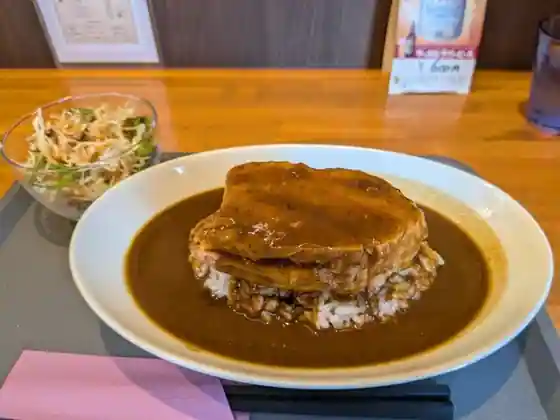
Tonkatsu Kissa Buta To Esupuresso To Asuka Mura Kojonai Shokudo Butato (Maru) (Maru) To
萩王
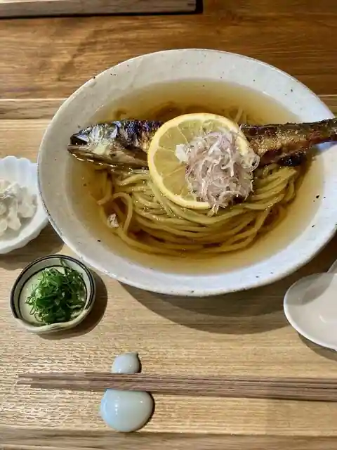
Hagi O
福源
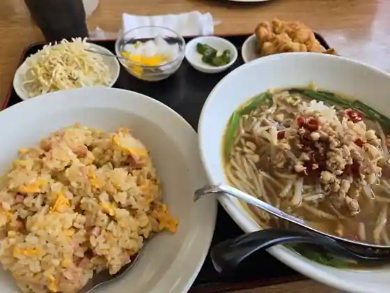
Fuku Gen
カリオン
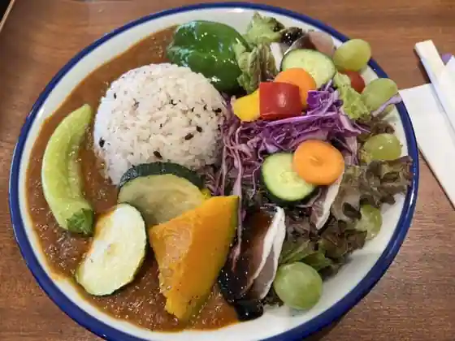
Karion
マツヤマカフェ
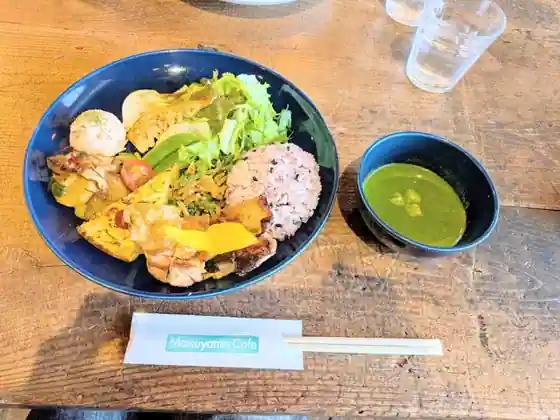
Matsuyama Cafe
今西誠進堂 明日香店
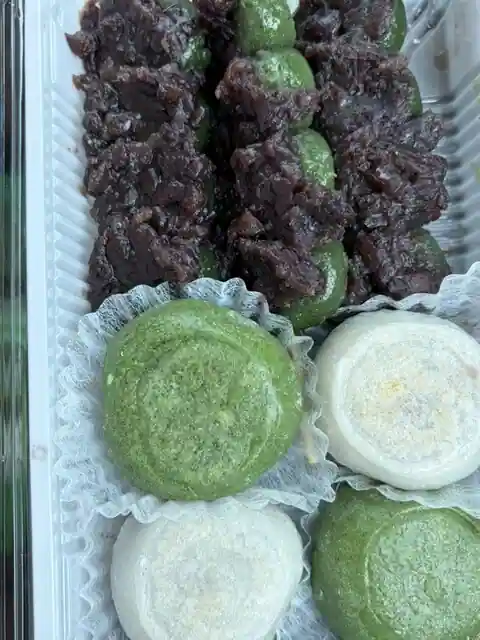
Imanishi Makoto Susumu Do Asuka
珈琲 さんぽ
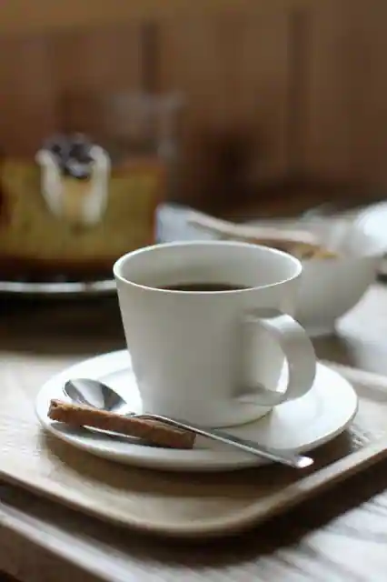
Coffee Sanpo
手打ちそば処一源庵
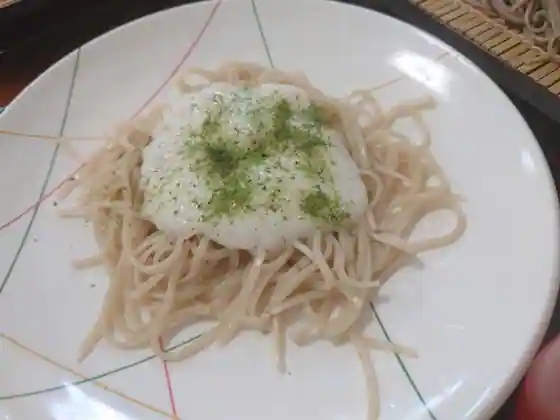
Teuchi Chisoba Tokoro Ichi Gen'An
ポカ フレール
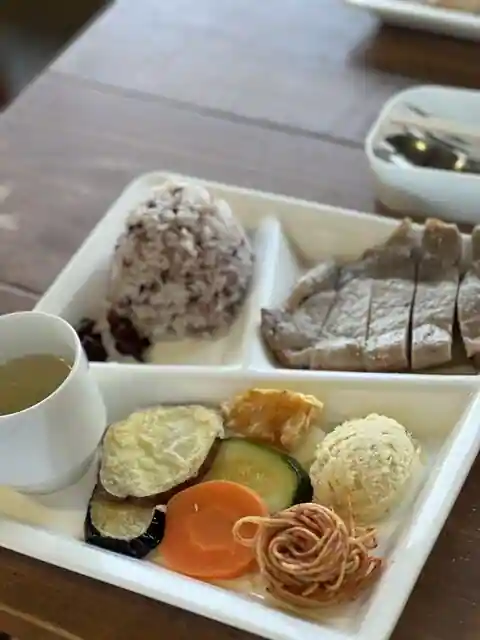
Poka Fureru
ココロゴハン
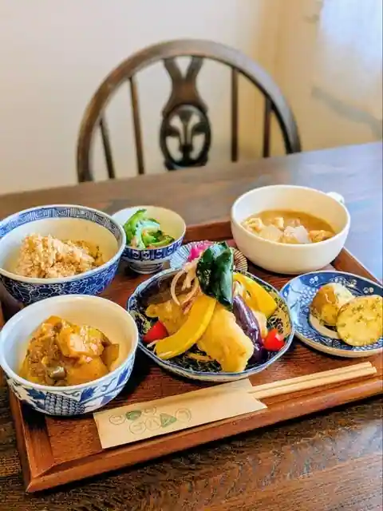
Kokorogohan
げんきな果実工房
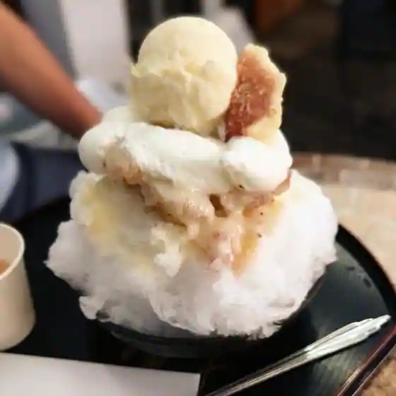
Genkina Kajitsu Kobo
ラ ヴィーユ ～都～
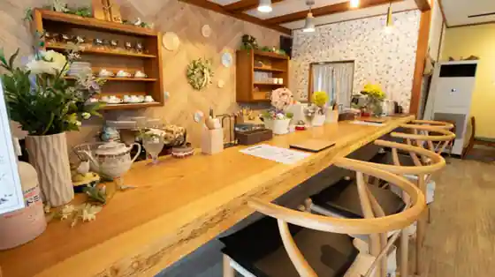
Ra Viyu ~ Miyako ~
ひだまりcafe あすか
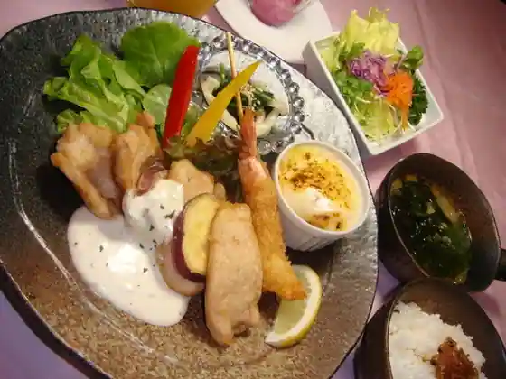
Hidamari cafe Asuka
さくらバーガー × 明日香スタンド
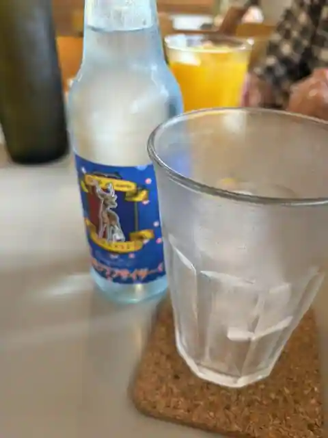
Sakura Burger X Asuka Sutando
道の駅 飛鳥
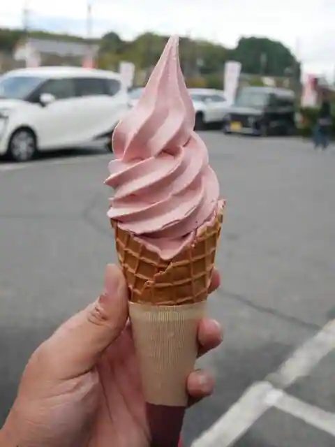
Michi No Eki Asuka
Sights
Kame Katachi Sekizo Mono
Kameishi

Nimen Ishi

Kenko Fukushi Center

Nanto Asuka Fureai Center Inukai Manyo Memorial Museum

Kokuei Asuka Rekishi Park
Kokuei Asuka Rekishi Park Kitora Kofun Shuhen Chiku
Kokuei Asuka Rekishi Park Ishi Butai Chiku
Taikan Otera Ato
Tenmu Jito Tenno Ryo (Hinoki Sumi Ochi Ryo)
Nara Bunkazai Kenkyusho Asuka Museum
Nara Prefectural Manyo Bunka Kan
Oka Tera
Kawara Jiseki Kofuku Tera
Tachibana Tera
Hinoki Kuma Jiseki (O Bi A Kokorozashi Shrine)
Kengyu Ko Tsuka Burial Mound Koshizuka Mikado Burial Mound
Saruishi
Amakashi Oka
Ishi Butai Burial Mound
Soga Iruka Kubizuka
Sakafune Ishi
Asukanimasu Shrine
Asuka Kyuseki
Asuka Tera
Asuka Mizuochi Iseki
Takamatsu Tsuka Burial Mound
Takamatsu Tsuka Hekiga Kan
Oni no So, Oni no Setchin